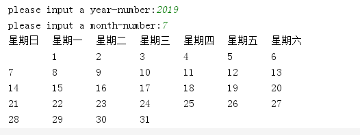

"""
万年历
a,请输入提示语句，输入年，月
b,根据用户输入的年，判断是否为闰年
c,根据用户输入的月，来判断天数
d,用循环计算 用户输入的年份距1900年1月1日的总天数
e,用循环计数计算用户输入的月份距输入年份的1月1日有多少天
f,相加d e 的天数 得到总天数
g,用总天数来计算输入月的第一天的星期数
h,根据g的值格式化输出这个月的日历
"""
year =int(input("please input a year-number:")) #请输入提示语句，输入年
num_day = 0 #到输入的月份之前有多少天
day_num = [31,28,31,30,31,30,31,31,30,31,30,31] #每月有多少天---列表
if year % 400 == 0 or (year % 4 == 0 and year % 100 != 0): #根据用户输入的年，判断是否为闰年
day_num[1] = 29
else:
day_num[1] = 28
#print(day_num)
month =int (input("please input a month-number:")) #请输入提示语句，输入月
for n in range(0,month -1):
num_day += day_num[n]
#print(num_day)
#用循环计数计算用户输入的月份距输入年份的1月1日有多少天
# print(num_day) #根据用户输入的月，来判断天数
# day = int(input("please input day number:"))
run_year_num = []
ping_year_num = []
ping_day = 365
run_day = 366
day_instance = 0 #1900 ---你输入的年份的总天数
for f in range(1900,year):
if f % 400 == 0 or (f % 4 == 0 and f % 100 != 0):
run_year_num.append(f)
else:
ping_year_num.append(f)
# print(run_year_num)
# print(ping_year_num)
if year == 1900:
day_instance = num_day
else:
day_instance = 365*len(ping_year_num) + 366*len(run_year_num) + num_day #用循环计算 用户输入的年份距1900年1月1日的总天数
# print(day_instance)
print("星期日\t星期一\t星期二\t星期三\t星期四\t星期五\t星期六")
space = 0
w = (day_instance - 6) % 7 #1号是周几
for i in range(1,w +1):
print("\t\t",end="")
space += 1
for j in range(1,day_num[month - 1] + 1):
print(j,"\t\t",end ="")
space += 1
if space % 7 == 0:
print("")
